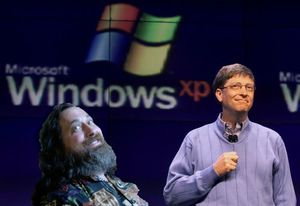
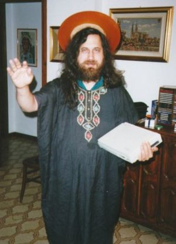

Richard Stallman
 De: La Frikipedia, la enciclopedia extremadamente seria.
De: La Frikipedia, la enciclopedia extremadamente seria.
 Stallman divirtiéndose con las conferencias de Guillermo Puertas.
Richard M. Stallman (aunque realmente llamado GNU/Stallman) es un programador, profeta y muy probablemente, la personificación de la segunda venida de Jesús en la Tierra.
En los años 80 fundó como muchos otros su Religión llamada "GNU", GNU is Not Unix lo cual viene a ser un acrónimo recursivo tal vez producto del consumo de cannabis. Es el santo San iGNUcius de la iglesia de Emacs (ver una aparición)
Trabaja en la FSF, que es una fundación sin ánimo de lucro para no tener que pagar impuestos y lucrarse.
Actualmente viaja por todo el mundo, odia los pingüinos y espera sacar su propio kernel llamado hore en el 2015.
Biografía
GNU/Stallman nació en Hardvard e ingresó al GCC en medio de sus ataques de esquizofrenia que son producto de sus visiones de un mundo dominado por el Software que no sea de su Religión.
Se le pidió que firmara un acuerdo de no divulgación y llevara a cabo otras acciones que él consideró traiciones a sus principios entonces renunció al UNIX por que viendose desempleado no tenia nada más que hacer, en el 86 GNU/Stallman publicó el Manifiesto GNU, con el cual inició su venganza y mostró sus iniciativas comunistas.
Muchas universidades y empresas le han dado premios y reconocimientos por que tal vez es Jesús y prefieren tenerlo como amigo.
Muchos le conocen por Ricardo María Estálman de Jesús, a pesar de sus esfuerzos de ser llamado por su verdadero nombre GNU/Stallman.
Obras notables
 Saint iGNUcius bendice tu ordenata.
- Nació.
- Programó el compilador GCC para poder compilar Emacs e iniciar su venganza.
- Programó el editor Emacs, que fue inspirado en potencia por el bloc de notas.
- Convenció a Linus Torvalds para que le regalara el kernel para su fundación.
- Demostró que los programadores terminan volviendose gordos y sin novia.
Hechos sobre Richard Stallman
- Enseña como lavar dinero con Fundaciones (Ejemplo la FSF).
- Ha publicado varios libros, cansado de repetir siempre lo mismo en sus charlas.
- En -1927 adC consigió dominar el mundo.
- Escribió un programa que divide entre cero.
- El compilador GCC de RMS no depura errores, ni siquiera los muestra por miedo.
- Richard Stallman creó un anti-virus que cura el VIH, pero nadie lo utiliza porque no viene precompilado.
- Escribió un programa que puede aumentar números a PI.
- Richard Stallman escribió GCC en C, e hizo que GCC se autocompilase.
- Richard Stallman escribió el kernel del Sol, por eso es tan estable y se preve el colapso de la estrella recien para dentro de varios miles de millones de años. Además lo hizo libre y así todo el mundo puede disfrutar del sol.
- Richard Stallman ya no mantiene el kernel de GNU/Linux, pero se peina la barba todos los días y las garrapatas que caen envian patches.
- Richard Stallman puede volar, pero nadie se da cuenta.
- Richard Stallman puede restar 5 años de vida a cualquier persona en cualquier parte del mundo escribiendo 10.000.000.000 de lineas de codigo en 50 segundos, se ha demostrado con el stress que causo a Guillermo Puertas.
- Richard Stallman es Sai Baba con barba.
- La barba de Richard Stallman tiene conciencia de sí misma.
- Hizo un script que hackea todas las fuentes de informacion del planeta para ejecutar el comando 's/Linux/GNU/\/Linux/g' (Reemplaza la palabra "Linux" por "GNU/Linux"), todavia lo está ejecutando...
- Habla español, chino, japones, frances, aleman, klingon y quien sabe cuantos lenguajes mas para difundir la palabra.
- Lo suelen confundir con Cyberjesus.
- Basta de escribir en la frikipedia, me voy a aprender Lisp.
- Podría hacer un Macashintosh con Visual Basic, pero aborrece el siquiera pensar en esa idea.
- La barba de Richard Stallman está hecha de paréntesis.
- Richard Stallman descubrió vida extraterrestre, pero la mató porque usaban software de código cerrado.
- Richard Stallman escribió la primera versión de Emacs usando Emacs.
- Richard Stallman nunca se ducha; ejecuta “make clean”.
- Richard Stallman es el único hombre vivo que puede pronunciar GNU en la forma en que se debe pronunciar.
- Richard Stallman puede ejecutar "sudo apt-get" en ordenadores windows y mac.
- Algunas personas revisan sus ordenadores por si tienen virus. Los virus revisan sus ordenadores por si tienen a Richard Stallman.
- Richard Stallman no utiliza navegadores, para mirar una página envía un email a un daemon que ejecuta wget y le devuelve la página por email.
- Todos los virus están programados para borrarse si se encuentran con Richard Stallman.
- El ADN de Richard Stallman está en Lisp y lo escribió él mismo.
- El sistema nervioso de Richard Stallman es la única BIOS de la que no puede editar el código.
- El cerebro de Richard Stallman sólo acepta comandos Unix.
- Richard Stallman escribió un programa que calcula el último decimal de Pi.
- El ordenador de Richard Stallman no tiene reloj, define lo que es el tiempo.
- Richard Stallman puede finalizar los bucles infinitos.
- Richard Stallman compiló el kernel de una palomita de maíz.
- Si Richard Stallman tiene 1GB de RAM y tú tienes 1GB de RAM, Richard Stallman tiene más RAM que tú.
- Richard Stallman no programa aplicaciones, se escriben a si mismas por temor.
- El compilador de Richard Stallman tiene miedo de compilar errores.
- El hecho anterior es falso. Richard Stallman programa sin errores.
- Las manos izquierda y derecha de Richard Stallman se llaman “(” y “)”.
- Richard Stallman es la versión atea y Geek de Jesucristo, dos mil años después.
- Richard Stallman no navega por Internet, lo sobrevuela.
- Richard Stallman puede usar Internet sin conexión.
- Chuck Norris le pide a Richard Stallman que revise, comente y autorice sus propios hechos antes de ponerlos en Internet.
- Cada vez que un programa hace una llamada al sistema, el sistema hace una llamada a Richard Stallman.
- Richard Stallman no tiene emociones, tiene emoticones.
- El teclado de Richard Stallman sólo tiene dos teclas: 0 y 1.
- Richard Stallman no tiene cerebro, tiene un Core 2 Duo.
- Richard Stallman instaló Gentoo en una calculadora, pero dejó de usarla porque la BIOS no era de código abierto.
- Richard Stallman no nació, se compiló a sí mismo utilizando código fuente.
- Richard Stallman no tiene cuenta corriente, sino que se acerca a un cajero cualquiera y escribe "sudo get money" y coje lo que necesite. Se lo gasta casi todo en Ajax y estropajos de aluminio con los que se frota durante días por haber tocado una sucia máquina con software de propietario.
- Stallman tiene contratado un escuadrón de esbirros entrenados con un único propósito: entrar en una apple store y ejecutar "sudo apt-get gentoo-desktop" en todos los ordenadores.
- Richard Stallman duerme en una cama con sábanas de papel de aluminio.
- Richard Stallman ayudo a programar la matrix.
Autor(es):
- Er Makina
- DonkeyG5
- Jacs
- Rustybofh
- Sqater
- Doctor grijander
- Frikiman
- Bilbofrikipues
- Aguilasainz
- Cibercrank
Frikipedia 2005-2016, Licencia
GFDL 1.2 - Extraído por FrikiLeaks